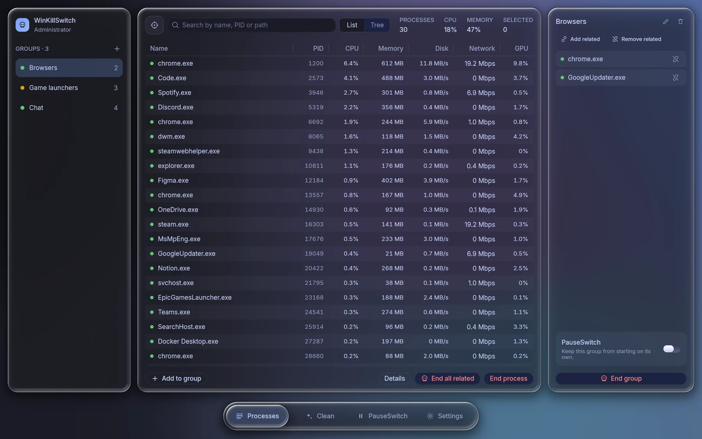

Live monitoring
Every process with CPU and memory, refreshed every 1.5 seconds, searchable by name, PID or path.
- Sortable, virtualised table
- Multi select with the keyboard
A native process manager for Windows, drawn entirely on the GPU. Watch what runs, gather the apps you care about into groups, and make it look exactly how you like.
Single portable .exe, latest release. MIT licensed. Release notes · All versions

The selection is a drop of clearer glass that springs between tabs, exactly like in the app. Try it: each tab shows the real screen behind it.
Screens use the built in demo machine.
Rune Aurora, Catppuccin, Rosé Pine, Tokyo Night, Kanagawa and Everforest, with their official light and dark variants. Pick one here and this whole page changes with it.
Panels refract and blur whatever drifts behind them, tinted toward your palette. Choose the style and strength in Settings, or switch the motion off to keep the GPU idle.
Clear glass with a bright, refracting rim. The tab bar is made of it.
Reeded glass that splits the colors behind it into ribs.
Heavy frost for the calmest, most readable backdrop.
Green works today. Amber is designed, wired into the interface and being built next.
Every process with CPU and memory, refreshed every 1.5 seconds, searchable by name, PID or path.
Collect the apps you care about. See at a glance which members are running.
Six palettes, light and dark, three glass styles and an accent picker, all instant.
Every destructive action shows a sheet listing each process before anything happens.
A live gauge of what is in use, cached and free, and one Clean button that shows exactly how much it gave back.
Analyze temporary files, caches, crash dumps and update leftovers, review the list, then clean in one step.
End an app with its child processes and siblings from the same install, then keep it closed until you start it yourself.
Stop a group from starting on its own: Startup apps, services and scheduled tasks. Switch it off and every setting returns exactly as it was.
Recorded straight from the app with Rune's headless renderer: groups, tabs, and palettes changing live.
The glass app you see here, with live sampling off the UI thread and saved groups.
A gauge of memory in use, cached and free, and one button that shows what it freed.
Temporary files, caches and leftovers, analyzed and cleaned in one step.
What is this process, per process GPU, find by window, process tree, file locks and a one click "why is my PC slow".
New process alerts, CPU and memory caps, wider autostart coverage, per process network, and rule packs with Gaming mode and Bloat blocker profiles.
Everything above, tested together.
Closing apps gracefully, autostart control that restores exactly, and a winget package.
WinKillSwitch is plain Rust. Rune lays it out, animates it on springs and draws it on the GPU, and rune-fx supplies the glass. This is the real code behind a panel: